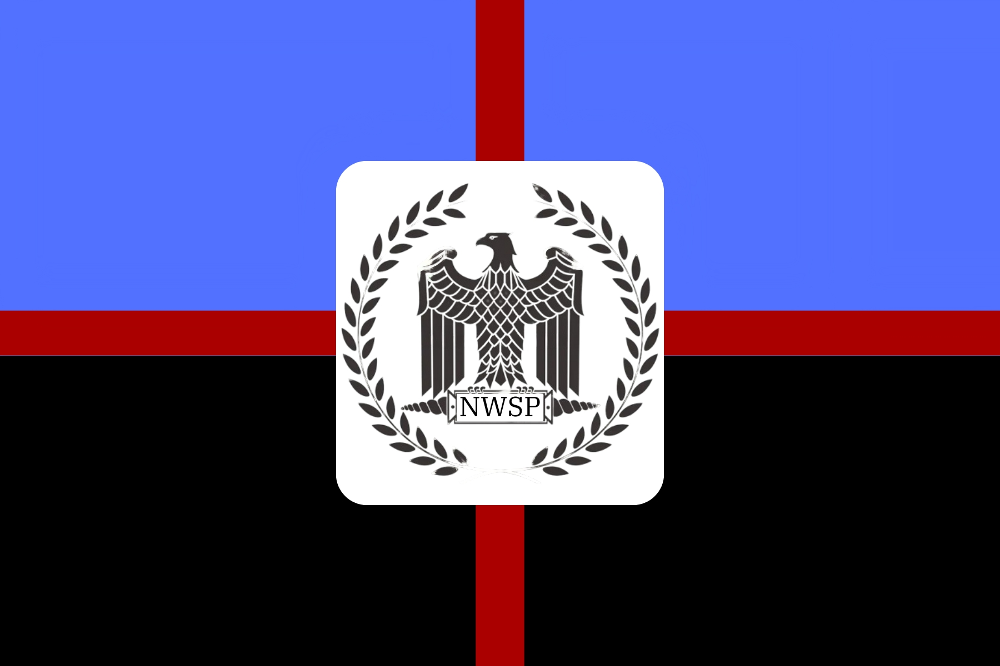

Current Flag

Current Flag of the NWPA
Current flag of the membermen
The current state of the NWSP
Last updated on 2/6/24
The NWSP is not currently a offical party in any schools yet. This will only be able to happen in a little more than a year. We need to get into highschool before we can make the student party a actual party. But in the mean time the party will conist as a group. The current members are the following.